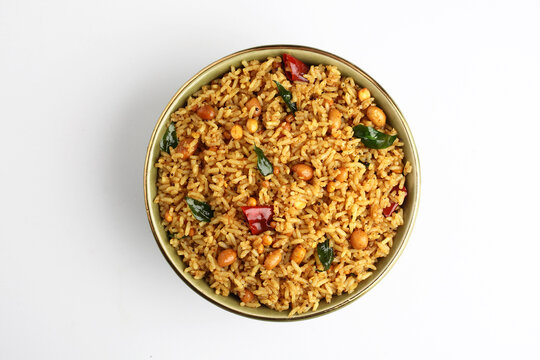

Puliyogare
⭐⭐⭐⭐⭐ 4.8 Rating | ⏱ 35 Minutes | 🍽 4 Servings
Category
Breakfast
Difficulty
Easy
Calories
310 kcal
Cooking Style
South Indian
📋 Ingredients
- 1.5 cups Raw Rice (e.g., Sona Masuri)
- cooked and cooled (must be non-sticky)
- 1 large lemon-sized ball of Tamarind (soaked in 1 cup warm water for 20 mins)
- 3 tbsp Sesame Oil (Til Oil)
- 1 tsp Mustard Seeds
- 1 tbsp Chana Dal (Split Bengal Gram)
- 1 tbsp Urad Dal (Split Black Gram)
- ¼ cup Raw Peanuts
- 3-4 Dry Red Chilies
- 1 sprig Curry Leaves
- ¼ tsp Asafoetida (Hing)
- ½ tsp Turmeric Powder
- 1 tbsp Jaggery, powdered
- 1 tbsp Coriander Seeds
- ½ tsp Fenugreek Seeds (Methi)
- ½ tsp Black Peppercorns
- 2 Dry Red Chilies
- Salt to taste
🍳 Required Utensils
- Heavy-bottomed Kadhai / Wok
- Small mixing bowl
- Small Pan (for dry roasting)
- Spice Grinder / Mortar & Pestle
- Slotted Spoon
- Large Mixing Bowl (for combining)
📖 Introduction
Puliyogare (also known as Puliyodarai or Tamarind Rice) is a staple South Indian rice dish characterized by its tangy, spicy, and slightly sweet tamarind paste mixed with fragrant spices and roasted nuts.
🔬 Principle
Puliyogare relies on reduction and spice emulsification. Boiling tamarind extract down to a concentrated paste (Puli Kachal) neutralizes raw sharpness, while oil-bloomed spices and roasted lentils balance the acidity with fat, heat, and crunch.
👨🍳 Procedure
- Cook the rice ensuring grains remain separate (not mushy).
- Spread it immediately onto a large tray, drizzle with 1 tsp sesame oil, and let it cool completely.
- Squeeze the soaked tamarind to extract thick juice.
- Strain and set aside the pulp.
- In a small pan, dry-roast the coriander seeds, fenugreek, peppercorns, and red chilies until aromatic.
- Cool and grind them into a coarse powder.
- Heat sesame oil in a heavy kadhai.
- Add mustard seeds.
- When they splutter, add chana dal, urad dal, peanuts, and dry red chilies.
- Sauté on low heat until lentils and peanuts turn golden brown.
- Add curry leaves and asafoetida. Sauté for 10 seconds.
- Add the extracted tamarind juice, turmeric powder, and salt.
- Bring to a boil.
- Simmer on medium heat, stirring occasionally, until the mixture thickens and oil begins to separate from the sides (about 10–15 minutes).
- Stir in the powdered jaggery and the freshly made puliyogare powder.
- Cook for another 2 minutes until fully incorporated.
- Turn off the heat.
- In a large bowl, take the cooled rice.
- Add 3–4 tablespoons of the warm Puli Kachal.
- Gently fold and mix using a cut-and-fold motion until the rice is uniformly colored.
- Taste and add more paste if needed.
- Allow the mixed rice to rest for at least 30 minutes before serving.
⚠ Precautions
- High tamarind content can trigger acid reflux in sensitive individuals; adjust jaggery and spice levels accordingly.
- Commercial or pre-made tamarind pastes often contain elevated sodium levels compared to homemade extractions.
💡 Chef Tips
- Hot or sticky rice breaks down during mixing. Use slightly dry, room-temperature rice (adding a dash of oil while cooling helps keep grains separate).
- The concentrated tamarind paste (Puli Kachal) stays fresh in the refrigerator for up to a month in an airtight glass jar.
- Puliyogare tastes significantly better after resting for a few hours or overnight as the rice absorbs the tamarind and spice essence.
🥗 Nutrition Facts
| Nutrient | Amount |
|---|---|
| Calories | 280-320 kcal |
| Protein | 5 g |
| Carbohydrates | 45 g |
| Fat | 10 g |
| Fiber | 3.5 g |
🍽 Serving Suggestions
- Pair with fried potato chips, appalam (papadum), or vegetable vadams.
- Serve alongside plain yogurt, cucumber raita, or coconut chutney to balance the acidity.
🌿 Health Benefits
- Tamarind and fenugreek stimulate digestive enzymes and aid bowel regulation.
- Curry leaves, turmeric, and peppercorns supply anti-inflammatory compounds.
✅ Result
A serving of Puliyogare should be reddish-brown, with distinct, non-sticky rice grains evenly coated in the tamarind paste. The final texture offers contrasting pops of crunch from roasted peanuts and lentils, set against the soft rice.
🎥 Watch Recipe Video
Learn the complete recipe by watching the step-by-step video.
▶ Watch on YouTube